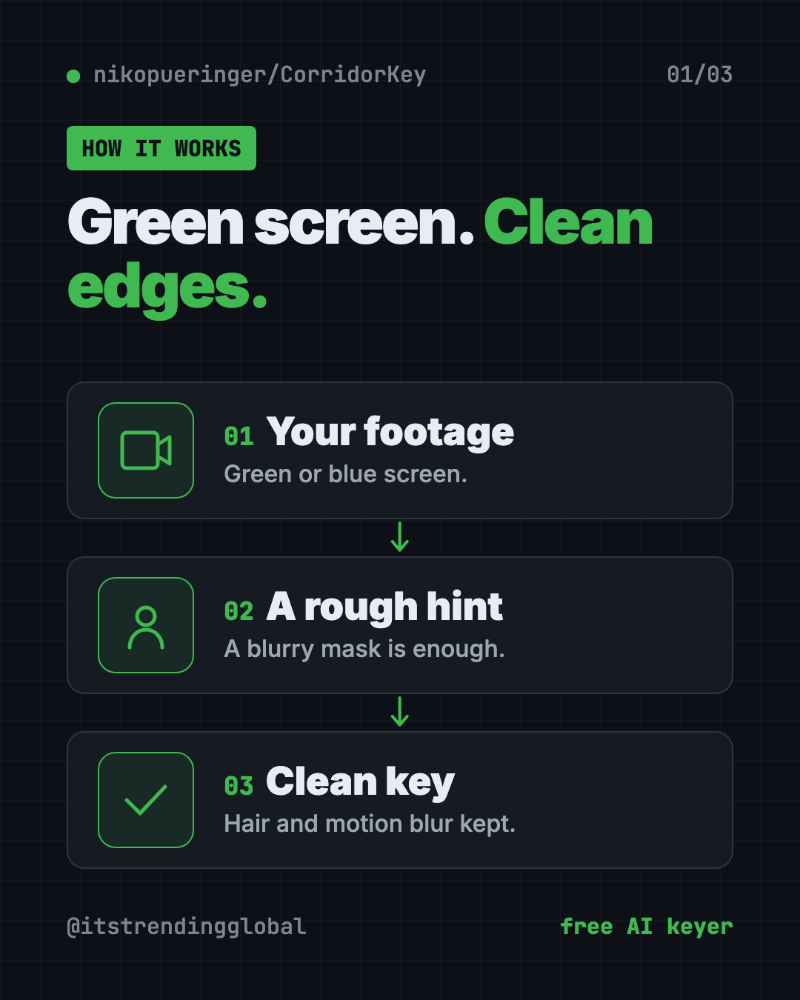
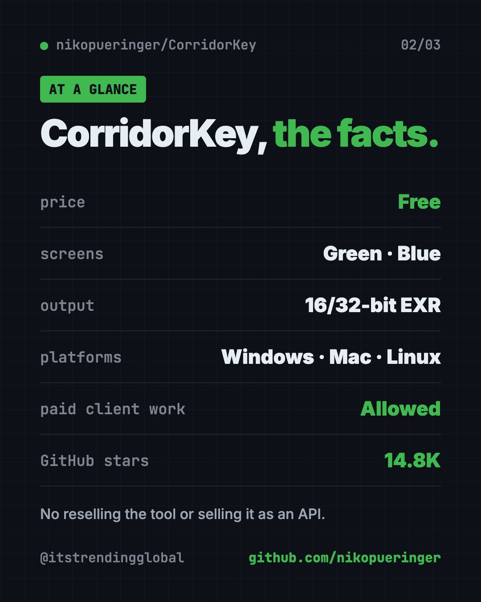
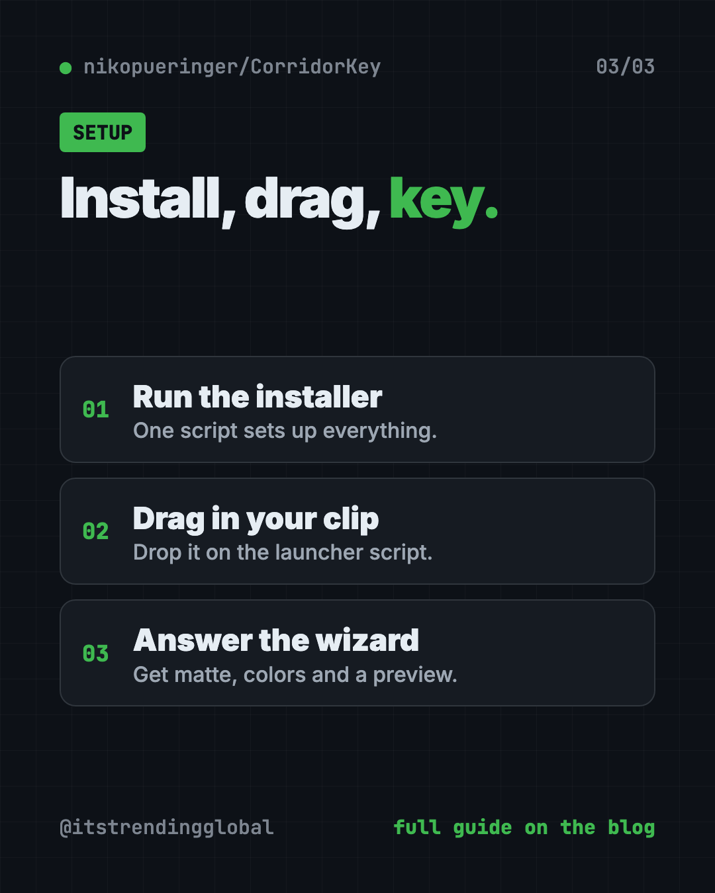

CorridorKey: Free AI Green Screen Removal That Keeps Hair
- Published 15 Oct 2026
- Updated 16 Oct 2026
- 8 min read
- License Custom (CorridorKey Licence, non-commercial share-alike)
- By the ITG Now team
CorridorKey is free AI green screen removal that keeps the hard parts clean: wispy hair, motion blur and see-through edges. You give it green or blue screen footage, and it separates your subject as if the screen was never there.
It's made by Niko Pueringer and released under Corridor Digital's own license. This guide covers what it does, what computer you need, and how to install it.
Key takeaways
- Free to use, even on paid client work. But you can't resell the tool or offer it as a paid API.
- Fixes fuzzy edges. It rebuilds the true color of every edge pixel instead of making a hard cut-out.
- Green or blue screen. It picks the right model for your footage automatically.
- Pro outputs. 16-bit and 32-bit EXR files for Nuke, Fusion, DaVinci Resolve and Premiere.
- Runs on modest hardware now. The README says recent builds work with 6 to 8 GB of graphics memory and on most M1 or newer Macs.
What is CorridorKey?
When you film someone in front of a green screen, the edges blend with the green. Hair, a fast-moving hand, a blurry shoulder: each edge pixel is part person, part green.
Old keying tools struggle to pull those colors apart. Many newer AI tools just make a hard on-or-off mask, which throws away the soft, see-through details. The result looks cut out with scissors.
CorridorKey is a neural network (a type of AI) built to "unmix" those pixels. For every pixel, even the very transparent ones, it predicts the true color of your subject plus a clean transparency map. The README says it "separates the light for you."

How does CorridorKey work?
It needs two things for each frame:
- Your green or blue screen footage.
- A rough mask hint. A blurry black-and-white shape that roughly covers your subject. It doesn't need to be neat. A quick chroma key or an AI roto tool is enough.
CorridorKey fills in the fine detail from that rough hint. The README says it's great at adding detail, but less good at removing extra bits if your hint is too big. So keep the hint a little tight.
Don't want to make hints by hand? Two optional add-ons can make them for you. GVM is fully automatic and works best on people. VideoMaMa takes a rough sketch from you and gives more control. Both need very powerful graphics cards, though.
💡 Tip: A slightly shrunk, blurry mask hint works better than a big, sharp one. The model was trained on rough, eroded masks.
How to use CorridorKey (real examples)
- YouTube intros and explainers. Film yourself on a cheap green screen and drop in any background, with your hair edges intact.
- Music videos with fast moves. Motion blur on swinging arms stays soft and real instead of chopped.
- Product shots. Glass, smoke or sheer fabric keeps its see-through look.
- Short films on a small budget. Get cleaner keys without hours of hand-painting edges, called rotoscoping.
- Client work. The license lets you use it to process images for commercial projects.
Is CorridorKey free?
Yes, to use. The CorridorKey Licence is based on Creative Commons BY-NC-SA 4.0, with extra rules:
- Allowed: using it for anything lawful, including processing footage for commercial projects.
- Not allowed: repackaging and selling the tool, or offering it as a paid API service.
- If you share changes, they must use the same license and keep the CorridorKey name.
The optional GVM and VideoMaMa add-ons have their own licenses, and VideoMaMa's is non-commercial. Read those before using them on paid work.
⚠️ Heads up: This isn't a typical open-source license like MIT. If you build software around CorridorKey, the README asks you to email Corridor Digital first.
What computer do you need?
The tool was first built on a workstation with a 96 GB graphics card. The community has since shrunk that a lot.
- NVIDIA on Windows: drivers that support CUDA 12.8 or higher.
- Graphics memory: recent builds should work with 6 to 8 GB.
- Mac: most M1 or newer Macs can run it.
- AMD: RX 7000 and RX 9000 cards on Linux. Windows support is experimental.
- Model download: about 300 MB, fetched automatically on first run.
The optional hint makers are much heavier. GVM needs about 80 GB of graphics memory.
CorridorKey at a glance
| Price | Free |
| Works offline | Yes, after the one-time model download |
| Platforms | Windows, Mac (M1 or newer), Linux |
| License | CorridorKey Licence (based on CC BY-NC-SA 4.0) |
| Screens | Green and blue |
| Outputs | EXR matte, foreground, preview comp |
| Best for | Video creators and VFX artists tired of fuzzy green edges |

How to install CorridorKey
The README uses a tool called uv, which installs Python and everything else for you. You don't need to set up Python yourself.
Want a simpler app with buttons? The README points artists to EZ-CorridorKey, a community version with an easier interface.
On Windows
- Download the CorridorKey repository from GitHub as a ZIP and unzip it.
- Double-click
Install_CorridorKey_Windows.bat. It installsuv, sets everything up and downloads the model. - To process a clip, drag a video file or folder onto
CorridorKey_DRAG_CLIPS_HERE_local.bat. Don't double-click this one, the README says that throws an error.
On Mac or Linux
- Download or clone the repository:
git clone https://github.com/nikopueringer/CorridorKey.git
- Open Terminal, type
bashand a space, then dragInstall_CorridorKey_Linux_Mac.shinto the window and press Enter. - To process a clip, run the launcher with your video:
./CorridorKey_DRAG_CLIPS_HERE_local.sh
Using the wizard
A step-by-step wizard asks you a few questions. It can organize your clips into folders, offer to make mask hints, and ask about gamma (Linear or sRGB), despill strength and auto-cleanup of small specks. When it's done, you get these folders:
- Matte: the transparency map.
- FG: your subject's clean colors.
- Processed: a ready-to-use version for Premiere or Resolve.
- Comp: a quick preview over a checkerboard.
Let Claude or Codex set it up for you
Claude Code and OpenAI Codex are AI helpers that run in your Terminal. They can do setup steps for you while you approve each one. CorridorKey even includes a handover document written for AI assistants.
Copy and paste this:
Please help me install CorridorKey from github.com/nikopueringer/CorridorKey.
1. Read the README and docs/LLM_HANDOVER.md first.
2. Check my computer: which graphics card or Mac chip do I have, and how much memory?
3. Run the right install script for my system.
4. Don't install the optional GVM or VideoMaMa add-ons unless my hardware can handle them.
5. Explain each step in plain English before you run it.
Then try asking:
Run CorridorKey on my clip greenscreen.mp4 using a rough mask hint, and explain the output folders.
My key has green fringe on the hair. Which CorridorKey settings should I change?
Explain the CorridorKey license in plain English. Can I use it for a paid client video?

Our take
CorridorKey goes after the hardest part of green screen work, the soft edges, and it's free to use on real projects. For creators who key a lot of footage, that can save hours per shot.
What we like:
- Keeps hair, motion blur and see-through edges.
- Handles green and blue screens.
- Pro-grade EXR outputs for real VFX work.
- Runs on far more modest hardware than it first needed.
- Free to use on commercial footage.
What to watch for:
- Still a command-line tool. EZ-CorridorKey is friendlier.
- You need a mask hint for each shot.
- The optional automatic hint makers need huge graphics cards.
- A custom license with real limits on resale and paid APIs.
- The README calls it a brand new release, so expect rough spots.
Editing the final video? Read our guides to OpenCut, a free CapCut alternative, and OpenReel, a free online video editor. Want AI to assemble your edits? Try OpenMontage.
FAQ
Is CorridorKey free for commercial work?
Yes, you can use it to process footage for paid projects. You can't resell the tool or sell it as a paid API service.
Does CorridorKey work with blue screens?
Yes. It has a separate blue screen model and picks green or blue automatically from your first frame.
Can CorridorKey run on a Mac?
Yes. The README says it runs on most M1 or newer Macs, with a faster MLX option for Apple Silicon.
Do I need a mask for CorridorKey AI green screen removal?
Yes, a rough one. It can come from a quick chroma key, an AI roto tool, or the optional GVM and VideoMaMa add-ons.
Which video apps work with CorridorKey output?
It writes EXR files that work in Nuke, Fusion and DaVinci Resolve. The Processed folder is ready for a quick preview in Premiere or Resolve.
Get CorridorKey: github.com/nikopueringer/CorridorKey
Latest AI news
- Meta gives away its big Muse Spark AI for free
- Google AI Studio spotted with managed agents hub
- Reddit's r/opensource bans AI-made projects and non-English posters
- JPMorgan private bank uses AI to help advisers
Keep reading

Twenty: Free Salesforce Alternative, Open Source CRM
Twenty is a free Salesforce alternative: an open source CRM to track customers, deals and emails. Host it yourself for free or use their cloud.